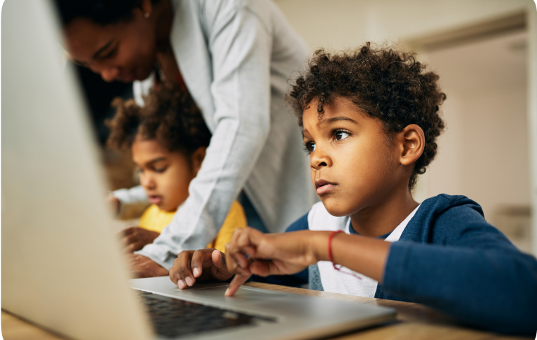

Transforming Communities Through Action


(Empowering Through Knowledge and Technology)
Our flagship project, the Library and ICT Center, aims to bridge the digital divide and promote education in the Ejisu community. Our objectives include:
Through this project, we envision:
Over the years, Sports 4 Life Ministries has been dedicated to creating positive change through
various
initiatives. Notable among these are our two basketball facilities:
1. The First Basketball Court (WIBLE ARENA): Funded by a generous couple who wish to remain anonymous, this court has been a cornerstone for our programs. It has served as a hub for multiple camps and weekly gatherings for athletes participating in our programs.
2. The Second Basketball Court (WILSHIRE BAPTIST COURT): Made possible by the Wilshire Baptist Church in Dallas, TX, this court has extended our reach and impact in the community. It, too, serves as a meeting point for athletes and participants.
These courts represent our commitment to sports, education, and community development. They are testaments to the transformative power of partnership and dedication to our mission.


In addition to our library and ICT center project, we are continuously engaged in various programs and activities aimed at empowering the youth through sports, education, and faith. Stay tuned for updates on our latest endeavors.
At Sports 4 Life Ministries, we believe in the power of action to bring about change. Join us in our journey of empowerment, where every project and initiative is a step toward a brighter future for our communities.